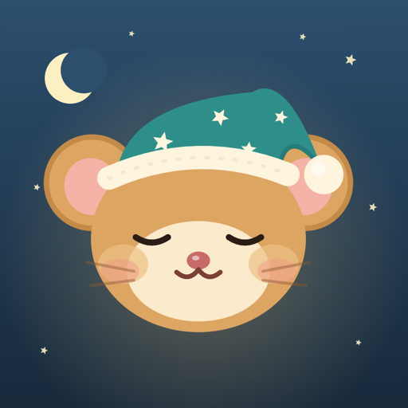

Dozy
The cozy pet alarm clock
Dozy is a hazel dormouse who sleeps in a burrow on your iPhone. When your alarm rings, it keeps ringing until you finish a small wake-up mission. Then Dozy wakes up, and you earn acorns and a streak day.
Coming to the App Store For iPhone, iOS 26.0 or later.
How a morning goes
- The alarm rings. Dozy uses Apple's AlarmKit, so it rings on Silent, in a Focus, with your iPhone locked and with the app closed.
- You do the mission. Stop the alert without doing it and the alarm comes back after about a minute. Leave the app in the middle of the mission and it comes back in about 15 seconds.
- Dozy wakes up. You earn acorns and a streak day. Acorns buy decor for his burrow.
Nine missions
Every mission has three difficulty levels, and you can try any of them without an alarm. Three are free forever. Six come with Dozy Plus.
- Smile at Dozy Free Hold a smile for the front camera for about 3 seconds.
- Shake Dozy awake Free Shake your phone.
- Count the acorns Free Sums on a big number pad.
- Walk Dozy to the kitchen Plus Get out of bed and take steps.
- Open the curtains Plus Show daylight to the back camera.
- Fetch Plus Find a household object. It is checked by image classification on your iPhone.
- Morning stretch Plus Squats with the phone held to your chest, counted from the phone's motion.
- Remember the path Plus Memory tiles.
- Say it like you mean it Plus Type a morning sentence exactly.
Always a way out
An alarm should never trap you. Hold "Hold to give up" for 3 seconds and the alarm ends. That counts as a missed morning and earns no acorns. The alarm also gives up by itself after 10 returns or 45 minutes.
If a mission is not working for you, tap "Can't do this one?" to swap it for Count the acorns. A mission that cannot run (the camera is refused, or the phone has no sensor for it) becomes Count the acorns too.
Dozy never dies, gets sick or guilt-trips. A missed morning means a sleepy Dozy and no acorns.
What is free forever
- One alarm, with one mission
- The three free missions: Smile at Dozy, Shake Dozy awake, Count the acorns
- Three alarm sounds
- Streaks and the progress calendar
- The share card
- Home Screen and Lock Screen widgets
- The starter decor and most of the burrow shop
Decor is bought with acorns you earn by getting up, never with money.
Dozy Plus
- Unlimited alarms
- All nine missions
- Up to three missions stacked on one alarm
- The wake-up check: a few minutes after the mission Dozy quietly asks "Still up?". No answer in two minutes and the alarm rings again
- Five more alarm sounds
- A few Plus decor items
$24.99 a year with a 7-day free trial, $4.99 a month, or $49.99 once for lifetime. These are US prices. See the terms for how the trial and renewal work.
Privacy
No account, no backend, no analytics, no ads and no third-party SDKs. Everything is stored on your iPhone, and no data is collected. Camera missions analyse what the camera sees on your iPhone and discard it. Frames are never saved or sent anywhere. The full privacy policy is short.
Made in code
Dozy, his burrow and the alarm sounds are original. The art is drawn in code and the sounds are synthesized. No AI images, no stock art.
Made by Idan Rokach. idanr391@gmail.com